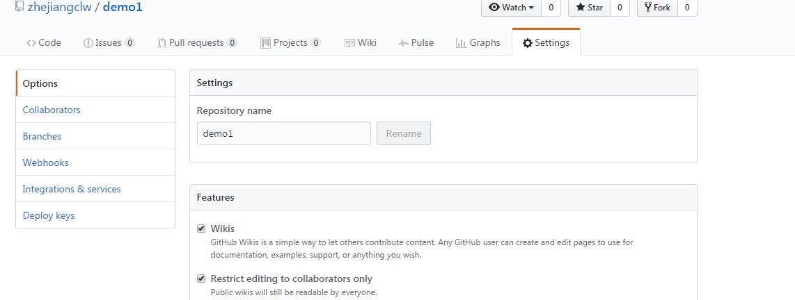

git的使用：
1、下载git，并配置环境变量
2、git常用命令：git verson 查看git版本信息
git help 帮助命令
3、管理项目常用命令：git init 初始化仓库
git add filename.filetype 添加一个文件
git add . 将所有文件和文件夹添加到待提交
git commit 提交到版本库中
-m 添加提交到版本库的版本描述信息
4、备份本地项目到云端：
1）注册登录云端git服务器
2）在云端创建一个备份项目
3）克隆云端项目到本地 git clone http
4）复制本地项目到git项目中
5）cd项目目录
6）git add . 添加所有文件到待提交阵列
7）git commit -m"描述" 提交到版本库
8）git push origin master：提交到云端版本库
github:
前端的标准都在上面，所有源码:
github删除东西在setting中
github上传项目要打开的话需要找到项目，，另外一般网页会以index.html优先打开，找到index.html后，点击，进入后点击setting，

然后下拉
注意选择这个项目，然后点击save，然后刷新
至变绿色即可打开网页了
 建立一个自己的网站：
在github上建立新项目，项目名等于自己的网站名，然后按上述操作，最后可通过比如zhejiangclw.github.com或者zhejiangclw.github.io访问
建立一个自己的网站：
在github上建立新项目，项目名等于自己的网站名，然后按上述操作，最后可通过比如zhejiangclw.github.com或者zhejiangclw.github.io访问